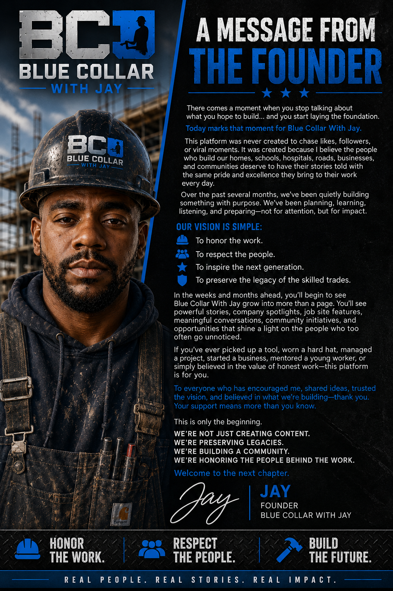

A Message From the Founder
Why we are building.
Blue Collar With Jay exists to honor the people behind the work.

Jay • Founder
This is only the beginning.
This platform was never created to chase likes, followers, or viral moments. It was created because the people who build our homes, schools, hospitals, roads, businesses, and communities deserve to have their stories told with pride and excellence.
We are building more than a page. We are preserving legacies, building community, and inspiring the next generation.